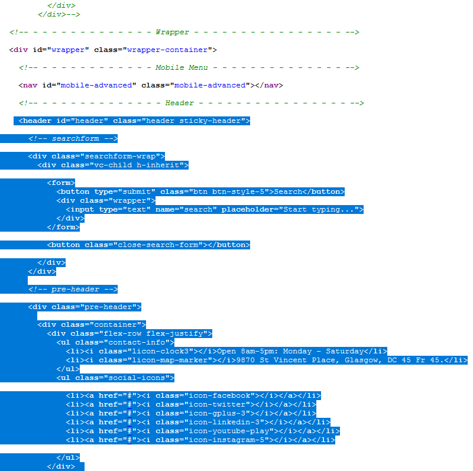
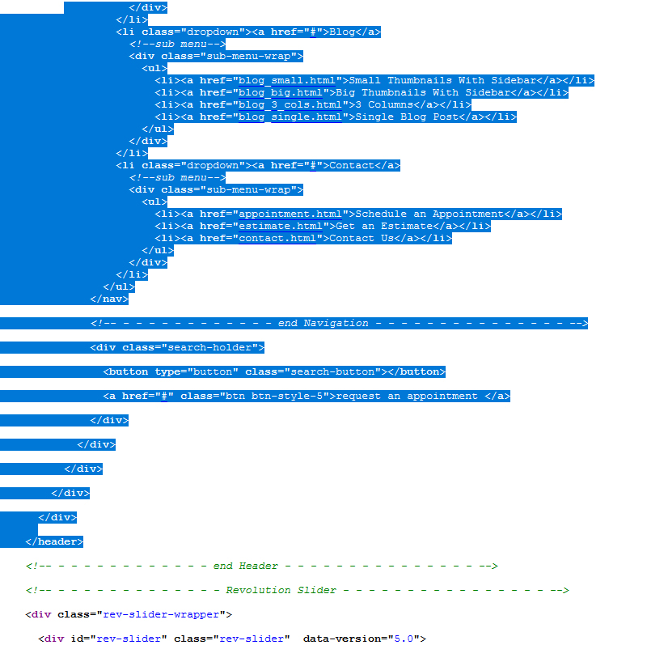
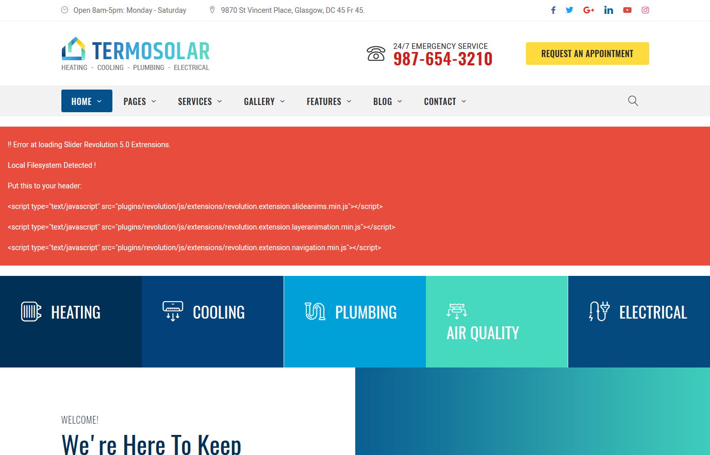
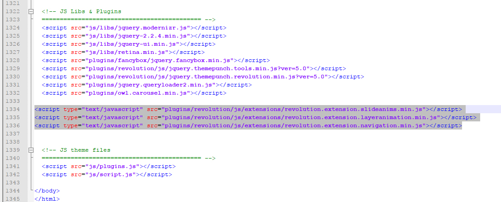

Thank you for purchasing my theme. If you have any questions that are beyond the scope of this help file, please feel free to contact us via Ticksy Support System. Thanks so much!
You have bought HTML template and we expect that you have basic HTML and CSS knowledge. If you are not expert, you can always find Basic HTML and CSS knowledge here
https://www.w3schools.com/html/
https://www.w3schools.com/css/
The template has 28 HTML and 28 RTL HTML files:
Template has different headers and footers. You can find them on different Homepages.
What should you do if you want to use Header 2 from Home Page 2 on all Pages?
Open home_2.html Search my comment <!-- - - - - - - - - - - - - - Header - - - - - - - - - - - - - - - - --> and select code till <!-- - - - - - - - - - - - - end Header - - - - - - - - - - - - - - - -->
Copy this code


Open any page and replace this code on any page. Each page has comments by sections: Header, Footer, etc.
You can do such action for any element on any page
<!doctype html>
<html lang="en">
<!-- Google Web Fonts
================================================== -->
<!-- Basic Page Needs
================================================== -->
<!--meta info-->
<!-- Mobile Specific Metas
================================================== -->
<!-- Vendor CSS
============================================ -->
<!-- CSS theme files
============================================ -->
</head>
<body>
<!--cookie-->
<!-- <div class="cookie">
<div class="container">
<div class="clearfix">
<span>Please note this website requires cookies in order to function correctly, they do not store any specific information about you personally.</span>
<div class="f-right"><a href="#" class="button button-type-3 button-orange">Accept Cookies</a><a href="#" class="button button-type-3 button-grey-light">Read More</a></div>
</div>
</div>
</div>-->
<!-- - - - - - - - - - - - - - Wrapper - - - - - - - - - - - - - - - - -->
<!-- - - - - - - - - - - - - Mobile Menu - - - - - - - - - - - - - - -->
<!-- - - - - - - - - - - - - - Header - - - - - - - - - - - - - - - - -->
<!-- searchform -->
<!-- pre-header -->
<!-- top-header -->
<!-- logo -->
<!-- - - - - - - - - - - - / Mobile Menu - - - - - - - - - - - - - -->
<!--main menu-->
<!-- - - - - - - - - - - - - - Navigation - - - - - - - - - - - - - - - - -->
<!-- - - - - - - - - - - - - end Navigation - - - - - - - - - - - - - - - -->
<!-- - - - - - - - - - - - - end Header - - - - - - - - - - - - - - - -->
<!-- - - - - - - - - - - - - - Revolution Slider - - - - - - - - - - - - - - - - -->
<!-- - - - - - - - - - - - - - Layer 1 - - - - - - - - - - - - - - - - -->
<!-- - - - - - - - - - - - - - End of Layer 1 - - - - - - - - - - - - - - - - -->
<!-- - - - - - - - - - - - - - Layer 2 - - - - - - - - - - - - - - - - -->
<!-- - - - - - - - - - - - - - End of Layer 2 - - - - - - - - - - - - - - - - -->
<!-- - - - - - - - - - - - - - Layer 3 - - - - - - - - - - - - - - - - -->
<!-- - - - - - - - - - - - - - End of Layer 3 - - - - - - - - - - - - - - - - -->
<!-- - - - - - - - - - - - - - Layer 4 - - - - - - - - - - - - - - - - -->
<!-- - - - - - - - - - - - - - End of Layer 4 - - - - - - - - - - - - - - - - -->
<!-- - - - - - - - - - - - - - Layer 1 - - - - - - - - - - - - - - - - -->
<!-- - - - - - - - - - - - - - End of Layer 1 - - - - - - - - - - - - - - - - -->
<!-- - - - - - - - - - - - - - Layer 2 - - - - - - - - - - - - - - - - -->
<!-- - - - - - - - - - - - - - End of Layer 2 - - - - - - - - - - - - - - - - -->
<!-- - - - - - - - - - - - - - Layer 3 - - - - - - - - - - - - - - - - -->
<!-- - - - - - - - - - - - - - End of Layer 3 - - - - - - - - - - - - - - - - -->
<!-- - - - - - - - - - - - - - Layer 1 - - - - - - - - - - - - - - - - -->
<!-- - - - - - - - - - - - - - End of Layer 1 - - - - - - - - - - - - - - - - -->
<!-- - - - - - - - - - - - - - Layer 2 - - - - - - - - - - - - - - - - -->
<!-- - - - - - - - - - - - - - End of Layer 2 - - - - - - - - - - - - - - - - -->
<!-- - - - - - - - - - - - - - Layer 3 - - - - - - - - - - - - - - - - -->
<!-- - - - - - - - - - - - - - End of Layer 3 - - - - - - - - - - - - - - - - -->
<!-- - - - - - - - - - - - - - Layer 4 - - - - - - - - - - - - - - - - -->
<!-- - - - - - - - - - - - - - End of Layer 4 - - - - - - - - - - - - - - - - -->
<!-- - - - - - - - - - - - - - Icon Box Item - - - - - - - - - - - - - - - - -->
<!-- - - - - - - - - - - - - - Icon Box Item - - - - - - - - - - - - - - - - -->
<!-- - - - - - - - - - - - - - Icon Box Item - - - - - - - - - - - - - - - - -->
<!-- - - - - - - - - - - - - - Icon Box Item - - - - - - - - - - - - - - - - -->
<!-- - - - - - - - - - - - - - Icon Box Item - - - - - - - - - - - - - - - - -->
<!-- - - - - - - - - - - - - - End of Slider - - - - - - - - - - - - - - - - -->
<!-- - - - - - - - - - - - - - Content - - - - - - - - - - - - - - - - -->
<!-- page section -->
<!-- page section -->
<!-- page section -->
<!-- - - - - - - - - - - - - Owl-Carousel - - - - - - - - - - - - - - - -->
<!-- Slide -->
<!-- Carousel Item -->
<!-- /Slide -->
<!-- Slide -->
<!-- Carousel Item -->
<!-- /Slide -->
<!-- Slide -->
<!-- Carousel Item -->
<!-- /Slide -->
<!-- - - - - - - - - - - - - Owl-Carousel - - - - - - - - - - - - - - - -->
<!-- Slide -->
<!-- Carousel Item -->
<!-- - - - - - - - - - - - - - Testimonial - - - - - - - - - - - - - - - - -->
<!-- /Carousel Item -->
<!-- /Slide -->
<!-- Slide -->
<!-- Carousel Item -->
<!-- - - - - - - - - - - - - - Testimonial - - - - - - - - - - - - - - - - -->
<!-- /Carousel Item -->
<!-- /Slide -->
<!-- Slide -->
<!-- Carousel Item -->
<!-- - - - - - - - - - - - - - Testimonial - - - - - - - - - - - - - - - - -->
<!-- /Carousel Item -->
<!-- /Slide -->
<!-- call out-->
<!-- page section -->
<!-- owl item -->
<!-- owl item -->
<!-- owl item -->
<!-- banners -->
<!-- page section -->
<!-- Carousel Item -->
<!-- /Carousel Item -->
<!-- Carousel Item -->
<!-- /Carousel Item -->
<!-- Carousel Item -->
<!-- /Carousel Item -->
<!-- Carousel Item -->
<!-- /Carousel Item -->
<!-- Carousel Item -->
<!-- /Carousel Item -->
<!-- Carousel Item -->
<!-- /Carousel Item -->
<!-- page section -->
<!-- entry -->
<!-- - - - - - - - - - - - - - Entry attachment - - - - - - - - - - - - - - - - -->
<!-- - - - - - - - - - - - - - Entry body - - - - - - - - - - - - - - - - -->
<!-- entry -->
<!-- - - - - - - - - - - - - - Entry attachment - - - - - - - - - - - - - - - - -->
<!-- - - - - - - - - - - - - - Entry body - - - - - - - - - - - - - - - - -->
<!-- entry -->
<!-- - - - - - - - - - - - - - Entry attachment - - - - - - - - - - - - - - - - -->
<!-- - - - - - - - - - - - - - Entry body - - - - - - - - - - - - - - - - -->
<!-- newsletter -->
<!-- - - - - - - - - - - - - end Content - - - - - - - - - - - - - - - -->
<!-- - - - - - - - - - - - - - Footer - - - - - - - - - - - - - - - - -->
<!-- widget -->
<!-- widget -->
<!-- widget -->
<!-- widget -->
<!-- - - - - - - - - - - - - end Footer - - - - - - - - - - - - - - - -->
<!-- - - - - - - - - - - - end Wrapper - - - - - - - - - - - - - - -->
<!-- JS Libs & Plugins
============================================ -->
<!-- JS theme files
============================================ -->
</body>
</html>
We use Google fonts
https://fonts.google.com/specimen/Oswald
https://fonts.google.com/specimen/Heebo
For sure you can change fonts. Select needed fonts, and copy embed code on our pages
You can see commented code
<!-- Google Web Fonts
================================================== -->
<link href="https://fonts.googleapis.com/css?family=Heebo:300,400,500,700,800,900|Oswald:200,300,400,500,600,700" rel="stylesheet">
Replace our code with yours
After open css/style.css and make auto-replace
font-family: 'Oswald', sans-serif;
with your font
Create a logo with logo.png and replace it at images folder. For better view see my logo width
You opened your site locally and see such error

Don't worry. if you are testing on local server you need to include extensions of revolution slider (you do not need to include on live server).
Add this after revolution slider script (at the bottom of page)
<script type="text/javascript" src="plugins/revolution/js/extensions/revolution.extension.slideanims.min.js"></script>
<script type="text/javascript" src="plugins/revolution/js/extensions/revolution.extension.layeranimation.min.js"></script>
<script type="text/javascript" src="plugins/revolution/js/extensions/revolution.extension.navigation.min.js"></script>

This template uses 8 css files:
The main style.css has such structure:
/* ----------------------------------
1. Reset default browser styles
2. Global
3. General classes
4. Typography
5. Header
6. Content Elements
7. UI Elements
7.1. Buttons
7.2. Forms
7.2.1. Inputs & Textarea
7.2.2. Label & Legend
7.2.3. Checkbox & Radio
7.2.4. Select
7.2.5. Fieldset
7.2.6. Form variations
7.3. Tables
7.4. Lists
7.5. Blockquotes
7.6. Dividers
8. Widgets & Shortcodes
8.1. Twitter Feed
8.2. Instagram Feed
8.3. LightBox
8.5. Accordions & Toggles
8.6. Alert boxes
8.7. Callouts
8.8. Pagination
8.9. Dropcaps
8.10. Icon Boxes
8.11. Testimonials
8.12. Carousel Sliders
8.13. Progress Bars
8.14. Pricing Tables
8.15. Counters
8.16. Tabs & Tour Sections
8.17. Isotope
8.18. Team Members
8.19. Google Map
8.20. Services
8.21. Countdown
8.22. Audio Player
9. Blog
9.1. Entries
10. Portfolio
11. Shop
12. Sidebar
13. Footer
-------------------------------------*/
This template includes 21 Javascript files.
If you want to change slider settings, for example, you want switch on/off autoslideshow or change time delay you can find all slider settings here js/script.js
We use Revolution slider. How to adjust this slider you can read here https://www.themepunch.com/revsliderjquery-doc/slider-revolution-jquery-5-x-documentation/
For carousels we use OwlCarousel. Full Documentation you can find here https://owlcarousel2.github.io/OwlCarousel2/docs/started-welcome.html
For example you want to change speed on Revslider and remove arrows. Open my js/script.js and search commented code
/* ---------------------------------------------------- */
/* Revolution slider */
/* ---------------------------------------------------- */
if ($('#header').hasClass('style-2')) {
if ($('#rev-slider').length) {
jQuery("#rev-slider").revolution({
sliderType:"standard",
spinner: "spinner3",
responsiveLevels: [4096,1024,778,480],
delay:6000,
navigation: {
arrows:{
enable:true,
Delay: 6000 means 6 seconds per slide. If you wnt 8 seconds, write 8000. Arrows:{ Enable:true means that show arrows. Replace with false and you hide arrows. All parameters you can find in offisial documentations. Links are above
When your users load a page, retina.js checks each image on the page to see if there is a high-resolution version of that image on your server. If a high-resolution variant exists, the script will swap in that image in-place. Read more here: http://imulus.github.io/retinajs/
If you want to remove page loader remove this code in HTML
<div class="loader"></div>
To change a contact form and subscribe emails open php/mail.php, newsletter.php and insert you email
$to = 'mail@companyname.com';
Open js/script.js and search
/* ---------------------------------------------------- */
/* Google Maps */
/* ---------------------------------------------------- */
if ($('#googleMap').length) {
$(document).ready(function() {
var myCenter = new google.maps.LatLng(30.3459488, -97.7145152);
function loadMap() {
var mapProp = {
center: new google.maps.LatLng(30.3459488, -97.6545152),
zoom:13,
mapTypeId:google.maps.MapTypeId.ROADMAP
};
Change coordinates. You can generate new coordinates here
https://www.gps-coordinates.net/
I've used the following scripts:
Clipart for the preview was bought from http://depositphotos.com and https://unsplash.com/
IMPORTANT: clipart is not included in the stock file.
Once again, thank you so much for purchasing this theme. As I said at the beginning, I'd be glad to help you if you have any questions relating to this theme. No guarantees, but I'll do my best to assist. If you have a more general question relating to the themes on ThemeForest, you might consider visiting http://velikorodnov.ticksy.com and asking your pre-sale question in the "Item Discussion" section.
Monkeysan